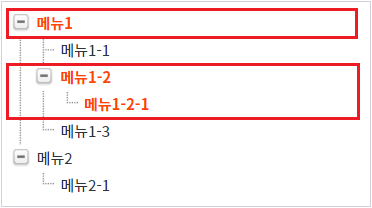
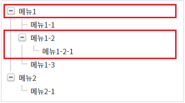

스크립트로 TreeView의 모든 노드를 선택 해제하는 예제입니다.
다음의 TreeView 함수로 구현합니다.
deselectNode( ) : 선택된 노드를 해제합니다.
모든 노드의 선택 해제하기
STEP 1. 초기 상태를 확인합니다.
TreeView가 구성되어 있고 3개의 노드가 선택되어 있습니다. (TreeView의 선택된 노드를 강조하기 위해 선택된 노드의 글자색을 붉은색으로 적용하였습니다.)
그림 1.브라우저(Chrome) 실행 예시

STEP 2. 모든 노드의 선택 해제하기
버튼 모든 노드의 선택 해제하기를 클릭합니다.STEP 3. 실행된 결과를 확인합니다.
모든 노드가 선택 해제됩니다.
그림 2.브라우저(Chrome) 실행 예시

TreeView의 함수 'deselectNode'를 이용하여 스크립트를 작성합니다. 세부 지정은 아래의 스크립트 예시에 작성되어 있습니다.
스크립트
// TreeView 'trv_exam1'의 선택된 노드를 해제합니다.
trv_exam1.deselectNode();deselectNode( )
[웹스퀘어5 SP5 개발 가이드] TreeView
링크 : https://docs1.inswave.com/sp5_user_guide/571f1c72bb8f77e6#bc8a9426f270f915